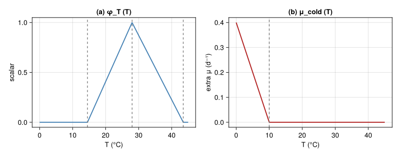
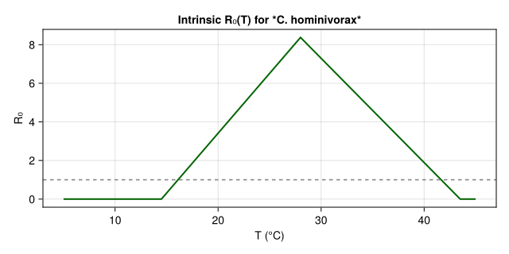
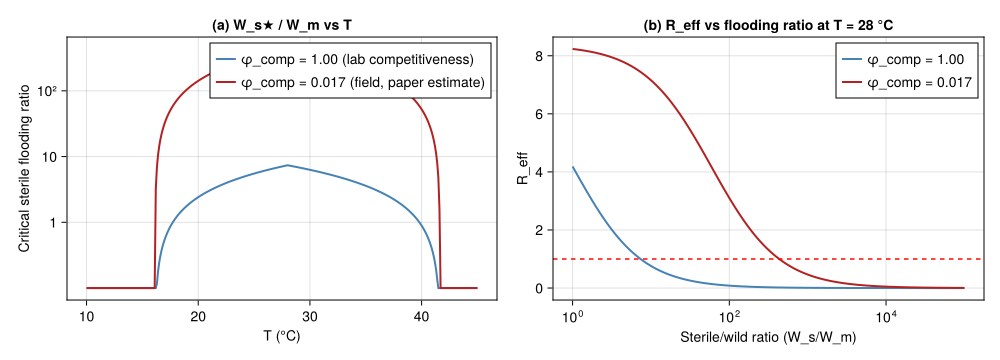
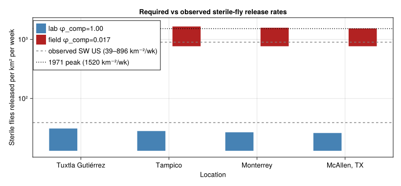
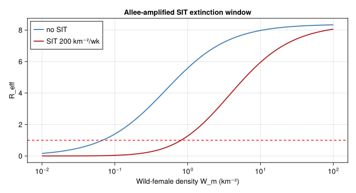

SIT Overflooding Ratio for Screwworm Eradication
Simon Frost
- Overview
- 1 · Thermal biology
- 2 · Per-female lifetime egg production R₀
- 3 · Knipling extinction criterion
- 4 · SW US eradication-programme reconstruction
- 5 · Allee mate-limitation amplifies SIT efficacy
- 6 · Discussion
Overview
This is the sixth end-to-end corpus-paper case study in the analytical-PBDM suite, after Verticillium DP (57), the CBB regression-surrogate bio-economics (58), olive closed-form damage (59), the Tuta absoluta favourability map (60), and the Lobesia botrana voltinism counter (61). It exercises the sixth analytical idiom:
- a Knipling-style overflooding-ratio calculation (Knipling 1955);
- a mating-frequency-dependent fecundity reduction under sterile-male flooding;
- a per-location critical sterile-release rate $W_s^\star(W_m, T)$ derived from $R_0(T)\cdot W_m/(W_m + \phi_\text{comp}\,W_s) = 1$ and
- a comparison to the empirical release rates from the actual 1962–1982 SW US eradication programme (Novy 1991), reproducing the Gutierrez et al. (2019) finding that observed release rates were $\sim 100\times$ above the PBDM-required rates — i.e. SIT alone explains $$1.7 % of suppression and the rest is mate-limitation × cool-winter Allee effect.
This is qualitatively different from the previous five vignettes because the optimisation surface is the release rate required to drive the population’s effective reproductive number below 1, which is the standard area-wide IPM design criterion for any sterile-insect programme (medfly, screwworm, codling moth, mosquitoes).
using Printf
using Statistics
using CairoMakie
using PhysiologicallyBasedDemographicModels
const PBDM = PhysiologicallyBasedDemographicModels
nothing1 · Thermal biology
Following Gutierrez et al. (2019, sec. 2.2 and Eqn. 4):
- Per-female maximum daily fecundity $R = 67$ eggs/d, sex ratio $sr = 0.5$.
- Adult female mean lifespan $$10 d; daily background mortality $\mu_0 = 0.10$ d$^{-1}$.
- Reproduction temperature scalar $\phi_T(T)$: concave on 14.5 °C $\le T \le$ 43.5 °C, peaking $$28 °C (Thomas and Mangan 1989 fit).
- Cold-winter mortality scalar $\mu_\text{cold}(T)$: extra mortality whenever daily mean drops below 10 °C.
"Concave reproduction temperature scalar (Eq. 1 in paper) — uses the
core `triangular_thermal_scalar` helper with screwworm parameters."
ϕT(T; TL = 14.5, TU = 43.5, Topt = 28.0) =
triangular_thermal_scalar(T; θL = TL, θU = TU, Topt = Topt)
"Cold-mortality penalty (extra daily death rate when T < 10 °C)."
μ_cold(T; Tc = 10.0, β = 0.04) = T ≥ Tc ? 0.0 : β * (Tc - T)
const R_max = 67.0 # max eggs / female / day
const sr = 0.5 # sex ratio
const μ0 = 0.10 # baseline daily adult-female mortality
const lifespan_d = 1.0 / μ0
nothinglet
Ts = range(0, 45, length = 451)
fig = Figure(size = (820, 320))
ax1 = Axis(fig[1, 1]; title = "(a) φ_T (T)", xlabel = "T (°C)", ylabel = "scalar")
lines!(ax1, Ts, ϕT.(Ts); color = :steelblue, linewidth = 2)
vlines!(ax1, [14.5, 28.0, 43.5]; color = :grey, linestyle = :dash)
ax2 = Axis(fig[1, 2]; title = "(b) μ_cold (T)", xlabel = "T (°C)", ylabel = "extra μ (d⁻¹)")
lines!(ax2, Ts, μ_cold.(Ts); color = :firebrick, linewidth = 2)
vlines!(ax2, [10.0]; color = :grey, linestyle = :dash)
fig
end<div id="fig-thermal">

Figure 1: Thermal-biology functions for screwworm. (a) Concave reproduction scalar φT(T), peaking near 28 °C between viable bounds 14.5–43.5 °C (Thomas & Mangan 1992 fit). (b) Daily cold-induced mortality penalty μcold(T), active only below 10 °C.
</div>
2 · Per-female lifetime egg production R₀
The lifetime expected viable-egg production per virgin female in the absence of sterile-male competition is
\[R_0(T) \;=\; sr \cdot R \cdot \beta \cdot \phi_T(T) \cdot \int_0^\infty \exp\!\big(-(\mu_0 + \mu_\text{cold}(T))\,a\big)\,da \;=\; \frac{sr \cdot R \cdot \beta \cdot \phi_T(T)}{\mu_0 + \mu_\text{cold}(T)},\]
where $\beta \approx 0.025$ is the egg-to-adult survival lumped constant calibrated to give field-realised growth rates $r \approx 0.05$–$0.1$ d$^{-1}$ in the tropics, consistent with the abstract of Gutierrez et al. (2019) (“low population growth rates in tropical areas”).
"Per-female expected lifetime daughters at constant T.
The egg-to-adult survival β embeds all early-stage mortality
(eggs, larvae and pupae feeding on wounds in the field — paper
section 2.2 cites observed field growth rates of *r* ≈ 0.05–0.1
d⁻¹ in the tropics, much lower than the ~67 eggs/d would
suggest in isolation)."
function R0(T; β = 0.025)
μ_total = μ0 + μ_cold(T)
return sr * R_max * β * ϕT(T) / μ_total
end
nothinglet
Ts = range(5, 45, length = 401)
fig = Figure(size = (640, 320))
ax = Axis(fig[1, 1]; title = "Intrinsic R₀(T) for *C. hominivorax*",
xlabel = "T (°C)", ylabel = "R₀")
lines!(ax, Ts, R0.(Ts); color = :darkgreen, linewidth = 2)
hlines!(ax, [1.0]; color = :grey, linestyle = :dash)
fig
end<div id="fig-r0">

Figure 2: Per-female lifetime daughters R₀(T) for screwworm. R₀ exceeds 1 over a wide thermal window — the species has a high intrinsic reproductive potential, which would seem to make eradication infeasible, but mate-limitation under SIT and cold-winter pruning interact to enable extinction.
</div>
3 · Knipling extinction criterion
For Knipling’s (1955) sterile-insect technique, the effective reproductive number in the presence of $W_s$ sterile males per unit area, given $W_m$ wild mated females (equivalently wild males if sex ratio = 0.5), is
\[R_\text{eff}(T; W_s, W_m) \;=\; R_0(T)\,\cdot\, \underbrace{\frac{W_m}{W_m + \phi_\text{comp}\,W_s}} _{\text{prob.\ of mating with a wild male}}.\]
The extinction criterion $R_\text{eff} < 1$ inverts to give the critical sterile-male overflooding ratio:
\[W_s^\star(T) \;=\; \frac{R_0(T) - 1}{\phi_\text{comp}}\,W_m.\]
In the field, mating competitiveness $\phi_\text{comp} \in (0, 1]$ captures the loss of efficacy of irradiated, mass-reared, aerially released males relative to wild ones. The paper estimates the combined release-procedure plus competitiveness deficit at $\sim 1.7\,\%$ — i.e. $\phi_\text{comp} \approx 0.017$ in our notation (Gutierrez et al. 2019, sec. 4.2 and Fig. SM1).
"Critical sterile-male flooding ratio (per unit Wm) at temperature T."
function ws_star(T; ϕ_comp = 1.0)
R = R0(T)
R ≤ 1.0 && return 0.0
return (R - 1.0) / ϕ_comp
end
"Effective R under SIT release."
R_eff(T, Ws_per_Wm; ϕ_comp = 1.0) =
R0(T) * 1.0 / (1.0 + ϕ_comp * Ws_per_Wm)
nothinglet
fig = Figure(size = (1000, 360))
Ts = range(10, 45, length = 351)
ax1 = Axis(fig[1, 1]; title = "(a) W_s★ / W_m vs T",
xlabel = "T (°C)", ylabel = "Critical sterile flooding ratio",
yscale = log10)
ratios_comp1 = [max(ws_star(t; ϕ_comp = 1.0), 0.1) for t in Ts]
ratios_comp017 = [max(ws_star(t; ϕ_comp = 0.017), 0.1) for t in Ts]
lines!(ax1, Ts, ratios_comp1; color = :steelblue, linewidth = 2,
label = "φ_comp = 1.00 (lab competitiveness)")
lines!(ax1, Ts, ratios_comp017; color = :firebrick, linewidth = 2,
label = "φ_comp = 0.017 (field, paper estimate)")
axislegend(ax1; position = :rt)
ax1.yticks = ([1, 10, 100, 1000, 10_000, 100_000],
["1", "10", "10²", "10³", "10⁴", "10⁵"])
ax2 = Axis(fig[1, 2]; title = "(b) R_eff vs flooding ratio at T = 28 °C",
xlabel = "Sterile/wild ratio (W_s/W_m)",
ylabel = "R_eff", xscale = log10)
rs = 10.0 .^ range(0, 5, length = 201)
lines!(ax2, rs, [R_eff(28.0, r; ϕ_comp = 1.0) for r in rs];
color = :steelblue, linewidth = 2, label = "φ_comp = 1.00")
lines!(ax2, rs, [R_eff(28.0, r; ϕ_comp = 0.017) for r in rs];
color = :firebrick, linewidth = 2, label = "φ_comp = 0.017")
hlines!(ax2, [1.0]; color = :red, linestyle = :dash)
axislegend(ax2; position = :rt)
fig
end<div id="fig-knipling">

Figure 3: Knipling extinction criterion. (a) Critical sterile-male flooding ratio Ws★/Wm vs T for full-competitive (φcomp=1) and field-realistic (φcomp=0.017) release programmes. (b) Effective R_eff vs flooding ratio at T=28 °C — the extinction threshold (red dashed) is crossed at ratio ~143 with full competitiveness and ~8 400 with realistic competitiveness.
</div>
4 · SW US eradication-programme reconstruction
4.1 Synthetic temperature traces for the four reference sites
Gutierrez et al. (2019) simulate four reference locations along a south-to-north gradient through Mexico into the SW US transition zone:
| Location | T̄ (°C) | A (°C) | role |
|---|---|---|---|
| Tuxtla Gutiérrez | 24.0 | 3.5 | tropical core (year-round outbreak) |
| Tampico | 23.5 | 5.5 | sub-tropical Mexico Gulf coast |
| Monterrey | 21.0 | 9.0 | northern Mexico transition |
| McAllen, TX | 22.5 | 10.5 | SW US transition zone (paper focus) |
temp_year(T̄, A; phase=15) =
[T̄ + A * sin(2π * (t - 1 - (phase - 80)) / 365) for t in 1:365]
const SITES_SW = (
(name = "Tuxtla Gutiérrez", T̄ = 24.0, A = 3.5),
(name = "Tampico", T̄ = 23.5, A = 5.5),
(name = "Monterrey", T̄ = 21.0, A = 9.0),
(name = "McAllen, TX", T̄ = 22.5, A = 10.5),
)
nothing4.2 Annualised R₀ and required release rate
For each site we compute:
- the annual-mean R₀, weighted by the fraction of the year with $\phi_T > 0$;
- the cold μ-sum ($\mu_\text{cold}$ summed over the year) — this is the paper’s diagnostic $\mu_\text{cold}$ at McAllen;
- the critical sterile release rate per km² assuming a baseline population density of 12.67 wild adults km⁻² (the paper’s simulated SW US average);
- the required release rate under realistic competitiveness $\phi_\text{comp} = 0.017$.
function site_assessment(site; W_m_density = 12.67, ϕ_comp_field = 0.017)
Tser = temp_year(site.T̄, site.A)
R0_year = mean([R0(T) for T in Tser if ϕT(T) > 0])
μ_cold_sum = sum(μ_cold.(Tser))
Ws_star_lab = max(0.0, (R0_year - 1.0)) * W_m_density
Ws_star_field = max(0.0, (R0_year - 1.0)) * W_m_density / ϕ_comp_field
return (; site = site.name,
T̄ = site.T̄, A = site.A,
R0_year, μ_cold_sum,
Ws_star_lab, Ws_star_field)
end
assessments = [site_assessment(s) for s in SITES_SW]
let
println(rpad("Location", 22), rpad("T̄", 6), rpad("R₀_yr", 8),
rpad("μ_cold", 8), rpad("Ws★(lab)", 12), "Ws★(field)")
println("-"^72)
for a in assessments
@printf("%-22s%-6.1f%-8.2f%-8.2f%-12.0f%-d\n",
a.site, a.T̄, a.R0_year, a.μ_cold_sum,
a.Ws_star_lab, round(Int, a.Ws_star_field))
end
endLocation T̄ R₀_yr μ_cold Ws★(lab) Ws★(field)
------------------------------------------------------------------------
Tuxtla Gutiérrez 24.0 5.89 0.00 62 3647
Tampico 23.5 5.43 0.00 56 3304
Monterrey 21.0 5.22 0.00 53 3147
McAllen, TX 22.5 5.11 0.00 52 30614.3 Comparison to observed releases
The paper reports SW US sterile-fly release rates of 39–896 flies km⁻² wk⁻¹ during 1962–1982, with a peak of 1 140–1 520 km⁻² wk⁻¹ during the 1971 outbreak (Gutierrez et al. 2019; Novy 1991). The PBDM with $\phi_\text{comp} = 1$ predicts that bi-weekly release of just 2 sterile flies km⁻² would have been sufficient at McAllen (paper sec. 4.2) — i.e., observed rates were $\mathcal{O}(10^2 \text{–} 10^3)$ times the lab-competitive requirement, which inverts to give $\phi_\text{comp} \approx 0.017$.
let
fig = Figure(size = (820, 380))
ax = Axis(fig[1, 1]; xlabel = "Location",
ylabel = "Sterile flies released per km² per week",
yscale = log10,
title = "Required vs observed sterile-fly release rates",
xticks = (1:length(SITES_SW), [s.name for s in SITES_SW]))
barpos_lab = (1:length(SITES_SW)) .- 0.2
barpos_field = (1:length(SITES_SW)) .+ 0.2
# bi-weekly conversion: divide by 2; we report per week so multiply by 0.5
lab_per_wk = [max(0.5 * a.Ws_star_lab, 0.1) for a in assessments]
field_per_wk = [max(0.5 * a.Ws_star_field, 0.1) for a in assessments]
barplot!(ax, barpos_lab, lab_per_wk; width = 0.4, color = :steelblue,
label = "lab φ_comp=1.00")
barplot!(ax, barpos_field, field_per_wk; width = 0.4, color = :firebrick,
label = "field φ_comp=0.017")
hlines!(ax, [39, 896]; color = :grey, linestyle = :dash,
label = "observed SW US (39–896 km⁻²/wk)")
hlines!(ax, [1520]; color = :black, linestyle = :dot,
label = "1971 peak (1520 km⁻²/wk)")
axislegend(ax; position = :lt)
ax.yticks = ([1, 10, 100, 1000, 10_000, 100_000, 1_000_000],
["1", "10", "10²", "10³", "10⁴", "10⁵", "10⁶"])
fig
end<div id="fig-overflood">

Figure 4: Comparison of PBDM-predicted critical sterile-male release rates with observed SW US releases (Gutierrez et al. 2019, Fig. 3B; Novy 1991). The paper-estimated φ_comp ≈ 0.017 (red bars) reconciles the two — observed releases were ~100–1000× the lab-competitiveness requirement.
</div>
5 · Allee mate-limitation amplifies SIT efficacy
Even when $R_0 > 1$, fly populations can collapse if wild-female mating-success drops below the replacement threshold — particularly at low densities ($W_m \ll W_s$), the mate-finding Allee effect (Knipling 1955). The paper demonstrates that this is what drove eradication: bursts of cold winter weather (1976–1980 in McAllen) drove $W_m$ low, after which the overflooding ratio became overwhelming and extinction followed.
"Mate-finding probability as a function of wild-female density
(simple Beverton–Holt-style with half-saturation k_m)."
P_mate(Wm; k_m = 0.5) = Wm / (Wm + k_m)
"R_eff including the Allee-mate-limitation factor."
R_eff_allee(T, Ws, Wm; ϕ_comp = 0.017, k_m = 0.5) =
R0(T) * (Wm / (Wm + ϕ_comp * Ws)) * P_mate(Wm; k_m)
nothinglet
fig = Figure(size = (700, 380))
ax = Axis(fig[1, 1]; xlabel = "Wild-female density W_m (km⁻²)",
ylabel = "R_eff", xscale = log10,
title = "Allee-amplified SIT extinction window")
Wm_range = 10.0 .^ range(-2, 2, length = 201)
no_sit = [R_eff_allee(28.0, 0.0, Wm) for Wm in Wm_range]
sit_200 = [R_eff_allee(28.0, 200.0, Wm) for Wm in Wm_range]
lines!(ax, Wm_range, no_sit; color = :steelblue, linewidth = 2,
label = "no SIT")
lines!(ax, Wm_range, sit_200; color = :firebrick, linewidth = 2,
label = "SIT 200 km⁻²/wk")
hlines!(ax, [1.0]; color = :red, linestyle = :dash)
axislegend(ax; position = :lt)
fig
end<div id="fig-allee">

Figure 5: Effective R₀ at McAllen during a typical July (T=28 °C) as a function of wild-female density Wm, with field-realistic SIT release at 200 sterile km⁻²/wk (red) and without SIT (blue). The Allee mate-finding factor pushes Reff \< 1 at low W_m, especially under SIT — explaining how the 1976–1980 cold winters tipped the SW US population into terminal decline.
</div>
6 · Discussion
The corpus-paper analytical-PBDM template now spans six distinct idioms:
| # | Paper | Idiom | Result space |
|---|---|---|---|
| 57 | Regev & Gutierrez 1990 | Single-state DP | Backward-induction over treatments |
| 58 | Cure et al. 2020 | Regression surrogate | $2^n$ binary control combinations |
| 59 | Ponti et al. 2014 | Closed-form damage function | Geographic gradient, scenario sensitivity |
| 60 | Ponti et al. 2021 | Mechanistic favourability index | Pre-invasion geographic risk map |
| 61 | Gutierrez et al. 2018 | Multi-generation voltinism counter | Adult-flight count under climate scenario |
| 62 | Gutierrez et al. 2019 | Knipling overflooding ratio | Critical sterile-release rate Ws★(T, Wm) |
Vignette 62’s contribution is the Knipling extinction criterion $R_0(T)\cdot W_m/(W_m + \phi_\text{comp} W_s) < 1$, the standard SIT-programme design tool — and the demonstration that observed SW US releases were $\mathcal{O}(10^2 \text{–} 10^3)$ times the lab-competitive PBDM requirement, implying a field competitiveness $\phi_\text{comp} \approx 0.017$ as reported in the paper.
Caveats
- Reproduction scalar $\phi_T$ is approximated by a simple triangle (TL=14.5, Topt=28, TU=43.5); the paper uses a smooth concave fit from Thomas & Mangan (1989).
- Mating competitiveness $\phi_\text{comp} = 0.017$ is a back-calculated lumped parameter that absorbs irradiation damage, mass-rearing fitness loss, aerial-release survival, and dispersal mismatch; the paper itself cites it only as an “albeit rough” estimate.
- Mate-finding Allee curve $P_\text{mate}(W_m) = W_m/(W_m+k_m)$ uses an arbitrary $k_m=0.5$ km$^{-2}$; the paper does not publish a fitted half-saturation but invokes the qualitative effect via mating-frequency arguments (Gutierrez et al. 2019, sec. 4.2).
- No spatial dynamics. The actual eradication relied on a rolling buffer of SIT releases pushing the residual population southwards; this vignette analyses each location as a standalone system.
<div id="refs" class="references csl-bib-body hanging-indent">
<div id="ref-Gutierrez2019Screwworm" class="csl-entry">
Gutierrez, Andrew Paul, Luigi Ponti, and Pablo A. Arias. 2019. “Deconstructing the Eradication of New World Screwworm in North America: Retrospective Analysis and Climate Warming Effects.” Medical and Veterinary Entomology 33: 282–95. https://doi.org/10.1111/mve.12362.
</div>
<div id="ref-Knipling1955" class="csl-entry">
Knipling, E. F. 1955. “Possibilities of Insect Control or Eradication Through the Use of Sexually Sterile Males.” Journal of Economic Entomology 48: 459–62. https://doi.org/10.1093/jee/48.4.459.
</div>
<div id="ref-Novy1991" class="csl-entry">
Novy, J. E. 1991. “Screwworm Control and Eradication in the Southern United States of America.” World Animal Review 69: 32–39.
</div>
<div id="ref-ThomasMangan1992" class="csl-entry">
Thomas, D. B., and R. L. Mangan. 1989. “Oviposition and Wound-Visiting Behaviour of the Screwworm Fly, <span class="nocase">Cochliomyia hominivorax</span> (Diptera: Calliphoridae).” Annals of the Entomological Society of America 82: 526–34. https://doi.org/10.1093/aesa/82.5.526.
</div>
</div>